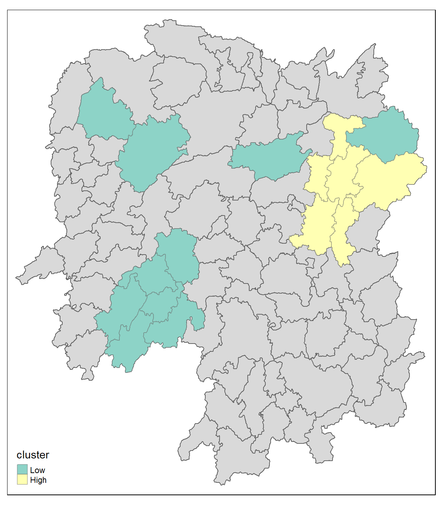

pacman::p_load(sf, sfdep, spdep, tmap, tidyverse)In-class Exercise 5: Global and Local Measures of Spatial Autocorrelation
5 Overview: Global and Local Measures of Spatial Autocorrelation
5.1 Getting Startted
- Introducing sfdep.
sfdepcreates a sf and tidyverse friendly interface to the package as well as introducing new functionalities that are not present in spdep.- sfdep utilizes list columns extensively to make this interface possible
5.1.1 Installing and Loadign the R Packages
The code chunk below is used to perform the following tasks:
- creating a package list containing the necessary R packages,
- checking if the R packages in the package list have been installed in R,
- if they have yet to be installed, RStudio will installed the missing packages,
- launching the packages into R environment.
5.2 Getting the Data Into R Environment
For the purpose of this in-class exercise, the Hunan data sets will be used. There are two data sets in this use case, they are:
- Hunan, a geospatial data set in ESRI shapefile format, and
- Hunan_2012, an attribute data set in csv format.
5.2.1 Import shapefile into r environment
The code chunk below uses st_read() of sf package to import Hunan shapefile into R. The imported shapefile will be simple features Object of sf.
hunan <- st_read(dsn = "data/geospatial",
layer = "Hunan")Reading layer `Hunan' from data source
`C:\zjho008\ISSS626-GAA\In-class_Ex\In-class_Ex05\data\geospatial'
using driver `ESRI Shapefile'
Simple feature collection with 88 features and 7 fields
Geometry type: POLYGON
Dimension: XY
Bounding box: xmin: 108.7831 ymin: 24.6342 xmax: 114.2544 ymax: 30.12812
Geodetic CRS: WGS 845.2.2 Import csv file into r environment (Attribute Table)
Next, we will import Hunan_2012.csv into R by using read_csv() of readr package. The output is R data frame class.
hunan2012 <- read_csv("data/aspatial/Hunan_2012.csv")Rows: 88 Columns: 29
── Column specification ────────────────────────────────────────────────────────
Delimiter: ","
chr (2): County, City
dbl (27): avg_wage, deposite, FAI, Gov_Rev, Gov_Exp, GDP, GDPPC, GIO, Loan, ...
ℹ Use `spec()` to retrieve the full column specification for this data.
ℹ Specify the column types or set `show_col_types = FALSE` to quiet this message.5.2.3 Combining the data by using left join
The code chunk below will be used to update the attribute table of hunan’s SpatialPolygonsDataFrame with the attribute fields of hunan2012 dataframe. This is performed by using left_join() of dplyr package.
hunan_GDPPC <- left_join(hunan,hunan2012) %>%
select(1:4, 7, 15)Joining with `by = join_by(County)`
Note
For this exercise, we only retain columns 1 to 4, column 7 and column 15. It is advisable to examine the output sf data.frame to learn know what are these fields.
In order to retain the geospatial properties, the left data frame must the sf data.frame (i.e. hunan)
5.2.4 Visualising by plotting a choropleth map
Now, we are going to prepare a choropleth map showing the distribution of GDPPC 2012 by using qtm() of tmap package.
tmap mode set to plottingtmap_mode("plot")
tm_shape(hunan_GDPPC) +
tm_fill("GDPPC",
style = "quantile",
palette = "Blues",
title = "GDPPC") +
tm_layout(main.title = "Distribution of GDP per capita by county, Hunan Province",
main.title.position = "center",
main.title.size = 1.2,
legend.height = 0.45,
legend.width = 0.35,
frame = TRUE) +
tm_borders(alpha = 0.5) +
tm_compass(type="8star", size = 2) +
tm_scale_bar() +
tm_grid(alpha =0.2)5.3 Global Measures of Spatial Autocorrelation
5.3.1 Step 1: Deriving Queens’ contigutiy weights: sfdep methods
wm_q <- hunan_GDPPC %>%
mutate(nb = st_contiguity(geometry),
wt = st_weights(nb,
style = "W"),
.before = 1)5.3.2 The wm_q
wm_qSimple feature collection with 88 features and 8 fields
Geometry type: POLYGON
Dimension: XY
Bounding box: xmin: 108.7831 ymin: 24.6342 xmax: 114.2544 ymax: 30.12812
Geodetic CRS: WGS 84
First 10 features:
nb
1 2, 3, 4, 57, 85
2 1, 57, 58, 78, 85
3 1, 4, 5, 85
4 1, 3, 5, 6
5 3, 4, 6, 85
6 4, 5, 69, 75, 85
7 67, 71, 74, 84
8 9, 46, 47, 56, 78, 80, 86
9 8, 66, 68, 78, 84, 86
10 16, 17, 19, 20, 22, 70, 72, 73
wt
1 0.2, 0.2, 0.2, 0.2, 0.2
2 0.2, 0.2, 0.2, 0.2, 0.2
3 0.25, 0.25, 0.25, 0.25
4 0.25, 0.25, 0.25, 0.25
5 0.25, 0.25, 0.25, 0.25
6 0.2, 0.2, 0.2, 0.2, 0.2
7 0.25, 0.25, 0.25, 0.25
8 0.1428571, 0.1428571, 0.1428571, 0.1428571, 0.1428571, 0.1428571, 0.1428571
9 0.1666667, 0.1666667, 0.1666667, 0.1666667, 0.1666667, 0.1666667
10 0.125, 0.125, 0.125, 0.125, 0.125, 0.125, 0.125, 0.125
NAME_2 ID_3 NAME_3 ENGTYPE_3 County GDPPC
1 Changde 21098 Anxiang County Anxiang 23667
2 Changde 21100 Hanshou County Hanshou 20981
3 Changde 21101 Jinshi County City Jinshi 34592
4 Changde 21102 Li County Li 24473
5 Changde 21103 Linli County Linli 25554
6 Changde 21104 Shimen County Shimen 27137
7 Changsha 21109 Liuyang County City Liuyang 63118
8 Changsha 21110 Ningxiang County Ningxiang 62202
9 Changsha 21111 Wangcheng County Wangcheng 70666
10 Chenzhou 21112 Anren County Anren 12761
geometry
1 POLYGON ((112.0625 29.75523...
2 POLYGON ((112.2288 29.11684...
3 POLYGON ((111.8927 29.6013,...
4 POLYGON ((111.3731 29.94649...
5 POLYGON ((111.6324 29.76288...
6 POLYGON ((110.8825 30.11675...
7 POLYGON ((113.9905 28.5682,...
8 POLYGON ((112.7181 28.38299...
9 POLYGON ((112.7914 28.52688...
10 POLYGON ((113.1757 26.82734...5.3.3 Computing local Moran’s I
In the code chunk below, global_moran() function is used to compute the Moran’s I value. Different from the spdep package, the output is a tibble data.frame.
moranI <- global_moran(wm_q$GDPPC,
wm_q$nb,
wm_q$wt)
glimpse(moranI)List of 2
$ I: num 0.301
$ K: num 7.645.3.4 Performing Global Moran’sI test
Moran’s I test will be performed instead of just computing the Moran’s I statistics. With sfdep package, Moran’s I test can be performed by using global_moran_test() as shown in the code chunk below.
global_moran_test(wm_q$GDPPC,
wm_q$nb,
wm_q$wt)
Moran I test under randomisation
data: x
weights: listw
Moran I statistic standard deviate = 4.7351, p-value = 1.095e-06
alternative hypothesis: greater
sample estimates:
Moran I statistic Expectation Variance
0.300749970 -0.011494253 0.004348351
Tip
- The default for
alternativeargument is “two.sided”. Other supported arguments are “greater” or “less”. randomization, and - By default the
randomizationargument is TRUE. Otherwise if FALSE, under the assumption of normality.
5.3.5 Performing Global Moran’I permutation test
In practice, Monte carlo simulation should be used to perform the statistical test. For sfdep, it is supported by globel_moran_perm()
It is a good practice to use set.seed() before performing simulation. This is to ensure that the computation is reproducible.
set.seed(1234)Next, global_moran_perm() is used to perform Monte Carlo simulation.
global_moran_perm(wm_q$GDPPC,
wm_q$nb,
wm_q$wt,
nsim = 99)
Monte-Carlo simulation of Moran I
data: x
weights: listw
number of simulations + 1: 100
statistic = 0.30075, observed rank = 100, p-value < 2.2e-16
alternative hypothesis: two.sidedThe statistical report on previous tab shows that the p-value (2.2e-16 is the scientific notation of 0.00000000000000022) is smaller than alpha value of 0.05. Hence, we have enough statistical evidence to reject the null hypothesis that the spatial distribution of GPD per capita resembles a random distribution (i.e. independent from spatial). Because the Moran’s I statistics is greater than 0. We can infer that the spatial distribution shows sign of clustering.
5.4 LISA Map
LISA map is a categorical map showing outliers and clusters. There are two types of outliers namely: High-Low and Low-High outliers. Likewise, there are two types of clusters namely: High-High and Low-Low clusters. In fact, LISA map is an interpreted map by combining local Moran’s I of geographical areas and their respective p-values.
5.5 Computing local Moran’s I
The code chunk below demonstrates how to compute Local Moran’s I of GDPPC at county level by using local_moran() of sfdep package
lisa <- wm_q %>%
mutate(local_moran = local_moran(
GDPPC, nb, wt, nsim = 99), # 100 simulations
.before = 1) %>%
unnest(local_moran)The output of local_moran() is a sf data.frame containing the columns ii, eii, var_ii, z_ii, p_ii, p_ii_sim, and p_folded_sim.
- ii: local moran statistic
- eii: expectation of local moran statistic; for localmoran_permthe permutation sample means
- var_ii: variance of local moran statistic; for localmoran_permthe permutation sample standard deviations
- z_ii: standard deviate of local moran statistic; for localmoran_perm based on permutation sample means and standard deviations p_ii: p-value of local moran statistic using pnorm(); for localmoran_perm using standard deviatse based on permutation sample means and standard deviations p_ii_sim: For
localmoran_perm(),rank()andpunif()of observed statistic rank for [0, 1] p-values usingalternative=-p_folded_sim: the simulation folded [0, 0.5] range ranked p-value (based on https://github.com/pysal/esda/blob/4a63e0b5df1e754b17b5f1205b cadcbecc5e061/esda/crand.py#L211-L213) - skewness: For
localmoran_perm, the output of e1071::skewness() for the permutation samples underlying the standard deviates - kurtosis: For
localmoran_perm, the output of e1071::kurtosis() for the permutation samples underlying the standard deviates.
5.6 Visualising p-value of local Moran’s I
In this code chunk below, tmap functions are used prepare a choropleth map by using value in the ii field.
tmap_mode("plot")tmap mode set to plottingtm_shape(lisa) +
tm_fill("p_ii_sim") +
tm_borders(alpha = 0.5) +
tm_layout(main.title = "p-value of local Moran's I",
main.title.size = 2)5.7 Visualising local Moran’s I
tmap_mode("plot")tmap mode set to plotting tm_shape(lisa) +
tm_fill("ii") +
tm_borders(alpha = 0.5) +
tm_view(set.zoom.limits = c(6,8)) +
tm_layout(
main.title = "local Moran's I of GDPPC",
main.title.size = 2)Variable(s) "ii" contains positive and negative values, so midpoint is set to 0. Set midpoint = NA to show the full spectrum of the color palette.5.7.1 Comparison - local Moran’s I and p-value
tmap mode set to plottingVariable(s) "ii" contains positive and negative values, so midpoint is set to 0. Set midpoint = NA to show the full spectrum of the color palette.5.8 Plotting LISA Map
lisa_sig <- lisa %>%
filter(p_ii_sim < 0.05)
tmap_mode("plot")tmap mode set to plottingtm_shape(lisa) +
tm_polygons() +
tm_borders(alpha = 0.5) +
tm_shape(lisa_sig) +
tm_fill("mean") +
tm_borders(alpha = 0.4)Warning: One tm layer group has duplicated layer types, which are omitted. To
draw multiple layers of the same type, use multiple layer groups (i.e. specify
tm_shape prior to each of them).
LISA map is a categorical map showing outliers and clusters. there are two types of outliers namely: High-Low and Low-High outliers. Likewise, there are two types of clusters namely: High-High and Low-Low clusters. In fact, LISA map is an interpreted map by combining local Moran’s I of geographical areas and their respective p-values. For instance isolating those below p-value of 0.05.
5.9 Hot Spot and Cold Spot Area Analysis (HCSA)
HCSA uses spatial weights to identify locations of statistically significant hot spots and cold spots in an spatially weighted attribute that are in proximity to one another based on a calculated distance. The analysis groups features when similar high (hot) or low (cold) values are found in a cluster. The polygon features usually represent administration boundaries or a custom grid structure.

5.10 Computing local Gi* statistics
we will need to derive a spatial weight matrix before we can compute local Gi* statistics. The code chunk below will be used to derive a spatial weight matrix by using sfdep functions and tidyverse approach.
wm_idw <- hunan_GDPPC %>%
mutate(nb = include_self(
st_contiguity(geometry)),
wts = st_inverse_distance(nb,
geometry,
scale = 1,
alpha = 1),
.before = 1)! Polygon provided. Using point on surface.Warning: There was 1 warning in `stopifnot()`.
ℹ In argument: `wts = st_inverse_distance(nb, geometry, scale = 1, alpha = 1)`.
Caused by warning in `st_point_on_surface.sfc()`:
! st_point_on_surface may not give correct results for longitude/latitude data5.10.1 Computing the local Gi* statistics by using the code chunk below:
HCSA <- wm_idw %>%
mutate(local_Gi = local_gstar_perm(
GDPPC, nb, wts, nsim = 99),
.before = 1) %>%
unnest(local_Gi)
HCSASimple feature collection with 88 features and 18 fields
Geometry type: POLYGON
Dimension: XY
Bounding box: xmin: 108.7831 ymin: 24.6342 xmax: 114.2544 ymax: 30.12812
Geodetic CRS: WGS 84
# A tibble: 88 × 19
gi_star cluster e_gi var_gi std_dev p_value p_sim p_folded_sim skewness
<dbl> <fct> <dbl> <dbl> <dbl> <dbl> <dbl> <dbl> <dbl>
1 0.261 Low 0.00126 1.07e-7 0.283 7.78e-1 0.66 0.33 0.783
2 -0.276 Low 0.000969 4.76e-8 -0.123 9.02e-1 0.98 0.49 0.713
3 0.00573 High 0.00156 2.53e-7 -0.0571 9.54e-1 0.78 0.39 0.972
4 0.528 High 0.00155 2.97e-7 0.321 7.48e-1 0.56 0.28 0.942
5 0.466 High 0.00137 2.76e-7 0.386 7.00e-1 0.52 0.26 1.32
6 -0.445 High 0.000992 7.08e-8 -0.588 5.57e-1 0.68 0.34 0.692
7 2.99 High 0.000700 4.05e-8 3.13 1.74e-3 0.04 0.02 0.975
8 2.04 High 0.00152 1.58e-7 1.77 7.59e-2 0.16 0.08 1.26
9 4.42 High 0.00130 1.18e-7 4.22 2.39e-5 0.02 0.01 1.20
10 1.21 Low 0.00175 1.25e-7 1.49 1.36e-1 0.18 0.09 0.408
# ℹ 78 more rows
# ℹ 10 more variables: kurtosis <dbl>, nb <nb>, wts <list>, NAME_2 <chr>,
# ID_3 <int>, NAME_3 <chr>, ENGTYPE_3 <chr>, County <chr>, GDPPC <dbl>,
# geometry <POLYGON [°]>5.11 Visualising Gi*
tmap_mode("plot")tmap mode set to plottingtm_shape(HCSA) +
tm_fill("gi_star") +
tm_borders(alpha = 0.5) +
tm_view(set.zoom.limits = c(6,8))Variable(s) "gi_star" contains positive and negative values, so midpoint is set to 0. Set midpoint = NA to show the full spectrum of the color palette.5.12 Visualising p-value of HCSA
tmap_mode("plot")tmap mode set to plottingtm_shape(HCSA) +
tm_fill("p_sim") +
tm_borders(alpha = 0.5)5.12.1 Visuaising local HCSA
For effective comparison, both maps can be plotted next to each other as shown below.
tmap mode set to plottingVariable(s) "gi_star" contains positive and negative values, so midpoint is set to 0. Set midpoint = NA to show the full spectrum of the color palette.5.13 Emerging hotspot
Plotting the significant (i.e. p-values less than 0.05) hot spot and cold spot areas by using appropriate tmap functions as shown below.
5.14 The plot
tmap mode set to plottingWarning: One tm layer group has duplicated layer types, which are omitted. To
draw multiple layers of the same type, use multiple layer groups (i.e. specify
tm_shape prior to each of them).5.15 The code
HCSA_sig <- HCSA %>%
filter(p_sim < 0.05)
tmap_mode("plot")
tm_shape(HCSA) +
tm_polygons() +
tm_borders(alpha = 0.5) +
tm_shape(HCSA_sig) +
tm_fill("cluster") +
tm_borders(alpha = 0.4)5.16 Observations
The plot reveals that there is one hot spot area and two cold spot areas. Interestingly, the hot spot areas coincide with the High-high cluster identifies by using local Moran’s I method in the earlier sub-section.